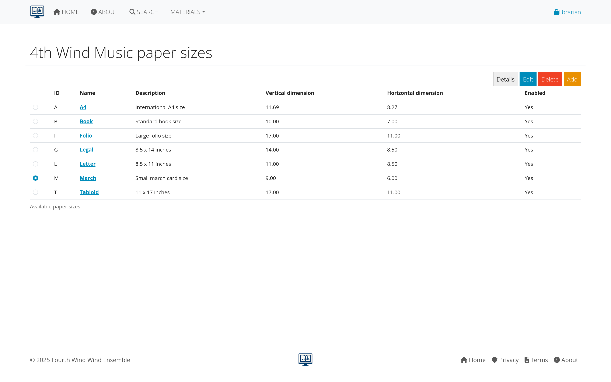
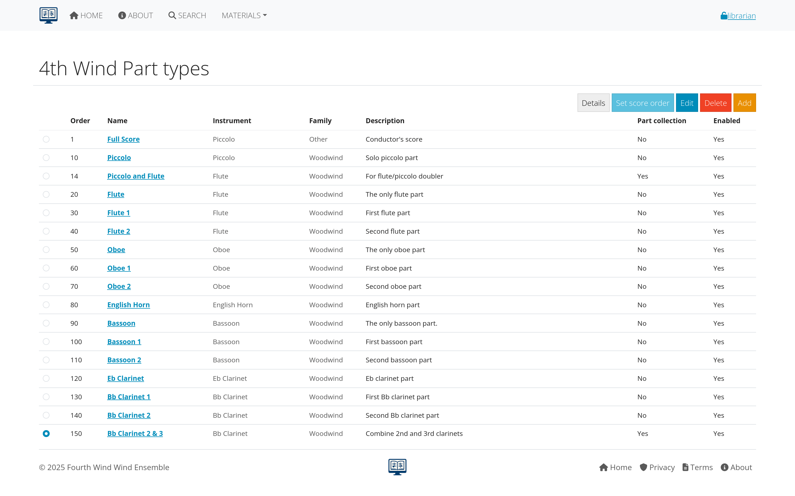

Supporting Data Management
This section covers the foundational data that supports your music library: instruments, ensembles, genres, paper sizes, and part types. Understanding and properly managing this data is essential for effective library organization.
Table of Contents
Overview of Supporting Data
What is Supporting Data?
Supporting data consists of the reference lists and categories that organize your music library:
- Instruments: Define what instruments are available for parts
- Ensembles: Specify which groups use the library
- Genres: Categorize musical styles and types
- Paper Sizes: Track physical dimensions of printed music
- Part Types: Classify different kinds of musical parts
Why Supporting Data Matters
- Consistency: Ensures uniform data entry across the library
- Organization: Helps users find and filter content effectively
- Reporting: Enables meaningful statistics and analysis
- Workflow: Streamlines the process of adding new compositions
 Figure 1: How supporting data elements work together in AllanaCrusis
Figure 1: How supporting data elements work together in AllanaCrusis
Instruments
Purpose of Instrument Management
The instrument list defines all possible instruments that can be assigned to musical parts. This creates consistency in naming and enables effective searching and filtering.
Viewing Instruments
- Navigate to MATERIALS > Instruments
- Browse the complete list of available instruments
- Use the search/filter to find specific instruments
- View instrument categories and groupings
 Figure 2: Instrument management interface
Figure 2: Instrument management interface
Adding New Instruments
For Librarians and Managers:
- Click “Add Instrument”
- Fill in instrument details:
- Name: Full instrument name (e.g., “Clarinet in B♭”)
- Short name: Abbreviated version (e.g., “Cl”)
- Category: Instrument family (woodwinds, brass, etc.)
- Sort order: Position in lists
- Active status: Whether to show in selections
- Save the new instrument
 Figure 3: Form for adding new instruments
Figure 3: Form for adding new instruments
Instrument Categories
Common categories include:
- Woodwinds: Flutes, clarinets, saxophones, oboes, bassoons
- Brass: Trumpets, horns, trombones, tubas
- Percussion: Timpani, mallet instruments, auxiliary percussion
- Strings: Violin, viola, cello, bass (if applicable)
- Other: Piano, harp, electronics, vocals
Managing Instrument Names
Best Practices:
- Use standard instrument names
- Include key/pitch designations (e.g., “Horn in F”)
- Be consistent with abbreviations
- Consider international naming conventions
- Include numbered parts (e.g., “Trumpet 1”, “Trumpet 2”)
Ensembles
Purpose of Ensemble Management
Ensembles define which musical groups use your library. This helps organize compositions by intended performing group and manage access permissions.
Common Ensemble Types
- Wind Ensemble: Standard concert band instrumentation
- Symphony Orchestra: Full orchestral forces
- Chamber Groups: Small ensembles (quintet, sextet, etc.)
- Jazz Ensemble: Big band and jazz combo arrangements
- Marching Band: Field show and parade music
- Choir: Vocal ensembles
Adding Ensembles
- Navigate to MATERIALS > Ensembles
- Click “Add Ensemble”
- Enter ensemble information:
- Name: Full ensemble name
- Short name: Abbreviation
- Description: Details about the group
- Active status: Whether currently in use
 Figure 4: Ensemble setup and configuration
Figure 4: Ensemble setup and configuration
Ensemble Assignment
- Compositions are typically assigned to one primary ensemble
- Some pieces may be suitable for multiple ensembles
- Assignment affects search filtering and organization
- Users may have access restricted by ensemble membership
Genres
Purpose of Genre Classification
Genres help categorize musical styles and make it easier for users to find appropriate repertoire for their needs.
Standard Genre Categories
Common genres include:
Concert Music
- Wind Ensemble: Standard concert band repertoire
- Symphonic Transcription: Orchestra pieces arranged for band
- Contemporary: Modern classical compositions
- Light Classical: Accessible classical works
Popular and Seasonal
- March: Military and concert marches
- Christmas: Holiday and seasonal music
- Pop/Show Tunes: Popular and Broadway arrangements
- Film Music: Movie soundtrack arrangements
Educational and Functional
- Method Book: Educational materials
- Warm-up: Exercises and technical studies
- Ceremonial: Processionals, hymns, patriotic music
Managing Genres
- Go to MATERIALS > Genres
- Review existing categories
- Add new genres as needed for your collection
- Organize by frequency of use
 Figure 5: Genre categories and their organization
Figure 5: Genre categories and their organization
Paper Sizes
Purpose of Paper Size Tracking
Paper sizes help librarians manage physical storage, copying, and distribution of printed music.
Common Paper Sizes
- Folio (9” x 12”): Most common for band and orchestral music
- Letter (8.5” x 11”): Standard copy paper size
- Legal (8.5” x 14”): Extended length for complex scores
- Tabloid (11” x 17”): Large format for full scores
- A4 (210mm x 297mm): International standard
- Custom sizes: For special or historical materials
Paper Size Management
- Navigate to MATERIALS > Paper Sizes
- View existing size definitions
- Add custom sizes if needed
- Set default sizes for different types of music
 Figure 6: Paper size definitions and settings
Impact on Library Management
- Storage planning: Calculate shelf space requirements
- Copying costs: Different sizes have different costs
- Distribution: Affects packaging and mailing
- Digital scanning: Determines scan settings and file sizes
Part Types
Purpose of Part Type Classification
Part types categorize the different kinds of musical parts and materials in your library.
Common Part Types
- Individual Parts: Single instrument parts
- Condensed Score: Reduced score for conductor reference
- Full Score: Complete conductor’s score
- Piano Reduction: Piano accompaniment version
- Vocal Parts: Choral or solo vocal lines
- Method Materials: Educational and exercise materials
Managing Part Types
- Go to MATERIALS > Part Types
- Review current categories
- Add specialized types for your collection
- Set ordering preferences for display
 Figure 7: Part type categories and configuration
Part Type Applications
- Inventory tracking: Know what materials you have
- Distribution planning: Different types have different distribution needs
- Access control: Some types may be restricted to certain users
- Workflow organization: Different processes for different part types
Best Practices
Data Consistency
- Standardize naming conventions across all supporting data
- Use complete, descriptive names rather than abbreviations when possible
- Be consistent with capitalization and punctuation
- Consider future needs when creating categories
Regular Maintenance
- Review supporting data periodically for accuracy and completeness
- Remove unused categories to keep lists manageable
- Update names and descriptions as standards evolve
- Document decisions about naming and categorization
User Training
- Train all librarians on proper use of supporting data
- Create quick reference guides for common categories
- Establish approval processes for adding new categories
- Share decisions with all users who enter data
Integration Considerations
- Plan for data imports from other systems
- Consider export needs for reports and analysis
- Think about integration with other music software
- Plan for system migrations and data preservation
 Figure 8: Workflow for maintaining supporting data quality
Figure 8: Workflow for maintaining supporting data quality
Impact on Library Operations
Search and Discovery
Well-organized supporting data enables:
- Precise filtering by instrument, genre, or ensemble
- Consistent search results across different users
- Predictable navigation through the library
- Effective recommendation systems
Reporting and Analysis
Good supporting data supports:
- Usage statistics by category
- Collection analysis and gap identification
- Planning reports for acquisitions
- Performance tracking by ensemble or genre
Workflow Efficiency
Proper setup enables:
- Faster data entry with predictable choices
- Reduced errors through standardized options
- Streamlined processes for adding new materials
- Consistent user experience across the system
Getting Help
Common Questions
- Missing instruments: Contact your librarian to add new instruments
- Genre classifications: Discuss with other librarians for consistency
- Paper size questions: Check with administrators about standards
- Part type confusion: Review examples and ask for clarification
Who to Ask
- System setup: Managers and administrators
- Music-specific questions: Experienced librarians
- Technical issues: System administrators
- Policy questions: Organizational leadership
Next Steps
With supporting data properly configured:
- Learn Composition Management - Add and edit musical works
- Explore Parts Management - Handle individual parts and files
- Review Search Features - Use your organized data for better searching
Continue to the next section: Compositions to learn about managing musical works and their metadata.